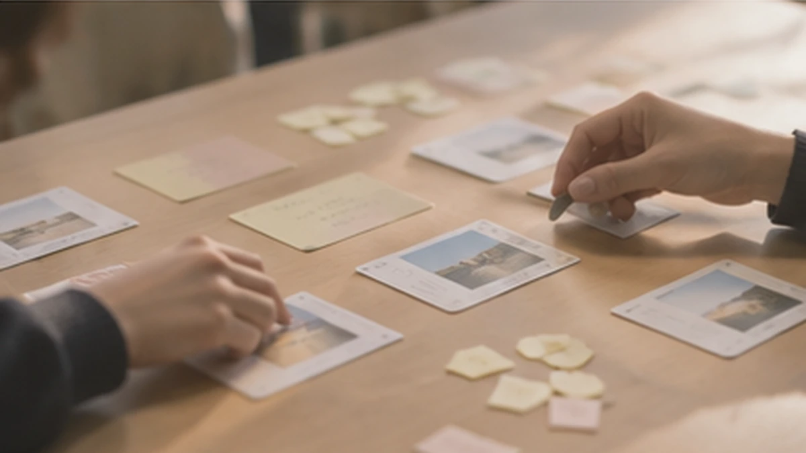
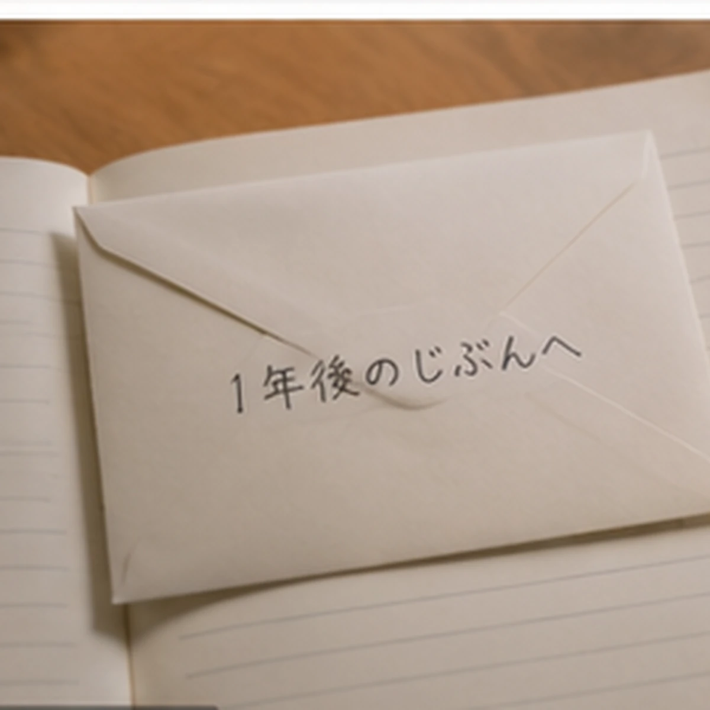
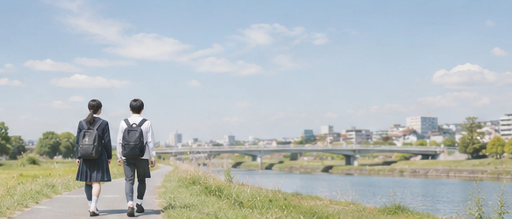
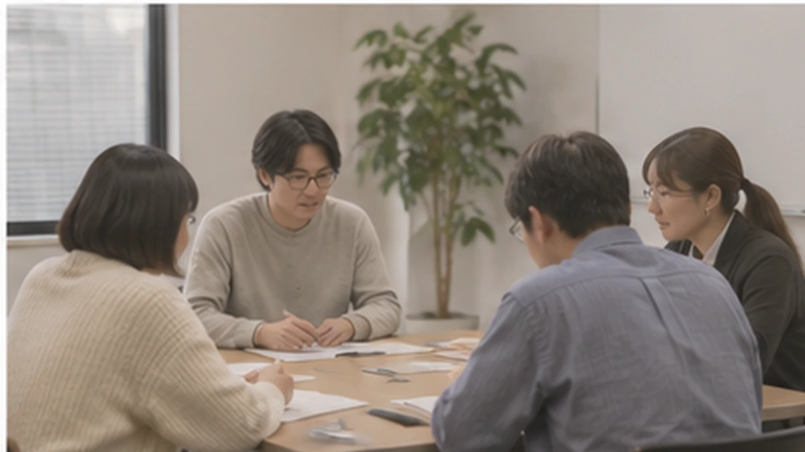
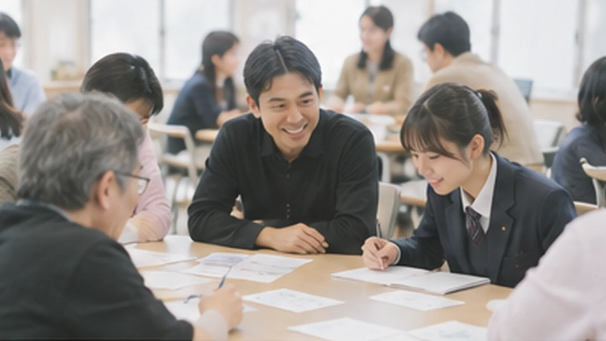
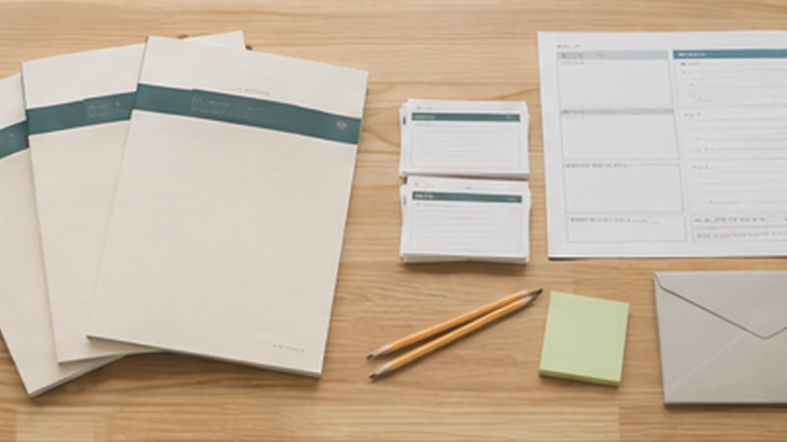

先生高校の「総合的な探究の時間」、大学のキャリア科目
こんなことはありませんか
- キャリアの授業が、自己分析シートと職業調べで終わってしまう
- 「やりたいことが分からない」生徒に、次の一歩を示しにくい
この講座では
- 分単位の時間割と、先生がそのまま読めることばまで書いた授業案があります
- 毎回同じ型（のぞく→つくる→じぶん）です。2回目から、生徒が自分で動けます
- 評価は3観点のルーブリック。評価に入れないものまで決めてあります
この講座は、何が違うのか？
＝自分を、組み立てる
だれの、どんな困りごとに
いま持っているもの（ヒト・モノ・カネ）を、数えるところから始めます。会社が事業を育てるやり方で、自分の次の一手を決めます。やりたいことは、探しません。
先生高校の「総合的な探究の時間」、大学のキャリア科目
人事・研修担当者入社3年目〜中堅社員の研修、キャリア面談
参加する人生徒・学生・社会人
このワークブックの約束
キャリアは「探すもの」ではなく「経営するもの」と考えます。会社は元手を数え、小さく試し、毎年計画を書き直します。自分の計画も、同じように書き足していきます。
記入例は、わざと「途中の答え」にしてあります。正解は示さず、診断やタイプ分けもしません。
やりたいことが、見つかっていなくて構いません。
むしろ、探すのをやめましょう。
代わりに、いま持っているものを並べることから始めます。3年後、まったく違うことを書いていても構いません。
むしろ、それが普通です。
大事なのは、何が変わったかを知ることです。
変わり方には、その人らしさが出ます。
ワークブック「はじめに」より（原文のまま）
1回の授業
実在の会社、チームでつくる会社、自分、と少しずつ自分に寄せていきます。同じ形を、12回くり返します。2回目からは、説明が少なくても動けます。
ACT 1 会社をのぞく｜ヒト
実際のワークブックの第2回を、そのまま体験できます。
前回の一手（2分）
2〜3人に話してもらえば十分です。やっていない人を責めません。「やらなかった理由も材料です」と返します。理由は、ワークブックの一手の欄に書いてもらいます。
出来事カード（3分）
その回のカードを伏せたまま各チームに配り、めくって30秒話します。その回の問いへの入口になるカードです。点や元手は動かず、運で何かが決まることもありません。
近くのお店の人から、「若い人に、店を知ってもらう方法がない」と相談された。
チームで30秒：あなたたちが間に立って、つなげそうな人たちはだれ？
なぞ｜メルカリ
メルカリは、自分では商品を作っていません。では、どこからお金を得ているでしょう？
予想で選んでみてください。
選ぶと、こたえと「確かめた事実」が出ます。
クラスカンパニーで、つながっていない二つをつないでみます
第1回に立ち上げた4〜5人の会社で、会社の見方をそのまま使ってみます。役割は1年を3つの期に分けて交代します。
比べるのは、自分たちの前の期とだけです。チームどうしで成果を比べることはしません。
同じ見方を、自分に当てはめてみる
家族以外で、自分のことを知っている大人は何人いますか。名前か呼び方を書き出してみませんか。
ミナト（途中の答え）部活の顧問、パン屋の人……2人？ 近所のおばさんは入るのかな。
あなたが入っている集まりのうち、お互いをほとんど知らない二つはどれとどれですか。つながると、どちらかに得はありそうですか。
ソラ（途中の答え）軽音部とバイト先。店長がイベントをやりたいと言っていた。……つないだら面倒かも。
答えは書き直さず、年ごとに書き足します
記入例の3人（ミナト・ハル・ソラ）は架空の生徒です。答えはわざと不完全にしてあり、まねをする見本ではありません。
【今日の一手】次の授業までに、1つだけやってみること
次の授業のはじめに書く：□ やってみた → どうだった？ □ やらなかった → 理由
楽しみ度は、無記名の付箋でも集めます。先生が授業を直すための数字で、成績には使いません。
12回の流れ
1回ごとに、巻末の計画書の1ブロックを書きます。ACTが進むと、ブロックが解放されます。第5・9・12回のあとは、1コマ丸ごと「決算」の回です。
記入例：架空の生徒「ミナト」の1年目。ワークブックの巻頭にあるこの画面を、毎回の最後の5分に鉛筆で塗ります。斜線のブロックは、まだ解放されていない回の分です。
2
ブロック 01 表紙｜わたし株式会社を設立する
ブロック 02 メンバーとつなぎ役
ブロック 03 主な活動
ブロック 04 強み
ブロック 05 運転資金
ブロック 06 お客さんと用事
ブロック 07 現場の声
ブロック 08 戦う場所
ブロック 09 ビジネスモデル
ブロック 10 試す計画と撤退ライン
ブロック 11 結果と方向転換
ブロック 12 3年計画｜第1版の完成
公開資料から、お金の流れ・持ち札・やめたことを図にします。使うのは、決算資料や公式ページです。続けた例と、やめた例の両方を入れます。やめた例は、7pay の終了や Netflix の DVD 事業の終了です。数字には時点と出典をつけ、授業の前に最新の値を確かめます。ロゴや商品写真、人物の成功物語は使いません。取り上げる会社と FOQUS に、提携や協賛の関係はありません。
高校の2年次は全8回で、第2版（青）を書き足します。3年次は全6回で、第3版（緑）を書き足します。2年次の第1回は、1年前に封をした「来年の自分への手紙」を開ける回です。大学生版・社会人版も、同じ12回です。書き足す時期は、大学生版が学期の終わりと1年後です。社会人版は、3か月後と1年後です。
3年後、まったく違うことを書いていても構いません。
むしろ、それが普通です。
大事なのは、何が変わったかを知ることです。
続けたくなる仕掛け
ゲームの要素は、計画書を書き続けるための道具として使います。主役は、3年間積み上がるキャリア計画書です。
巻頭｜毎回の最後の5分
ヒト・モノ・カネのゲージと実数、計画書とことばの数、進み具合。鉛筆で塗るだけです。自分の変化が、1ページで見えます。
毎回の STEP3 のあと
次の授業までに1つだけやってみること。3つから選ぶか、自分で決めます。次の授業のはじめに「やってみた／やらなかった」と理由を書きます。
毎回の最初の3分
その回のテーマにつながる出来事を、チームでめくって30秒話します。カードは回ごとに決まっていて、点や元手は動きません。

第5・9・12回のあと｜1コマ丸ごと
チームで「この期、何が変わったか」を90秒で話します。いくら稼いだかは発表しません。比べるのは、自分たちの前の期とだけです。
巻末｜12枠
12枠は「？？？」から始まります。会社のことばを自分の例に当てはめられたら獲得です。獲得の数は比べません。
第12回の最後
「いま一番気になっていること」などを書き、のりしろで封をします。開けるのは1年後の最初の授業で、そこから第2版を書き始めます。

教材のページ
高校生版 v3（A4・73ページ）から抜き出しました。大学生版・社会人版も同じ紙面で、問いの言い回しと記入例が違います。押すと拡大します。

講座の組み方
どの組み方も、12回の中身と計画書は同じです。時間の取り方と、書き足す時期だけが違います。
高校｜総合的な探究の時間
大学｜キャリア科目・初年次教育

企業研修｜入社3年目〜中堅、管理職にも

体験会｜説明会・イベント・社内イベント
導入の前に
のぞく：会社の見方を、自分のことに使える知識・技能
つくる・試す：決めて、試して、ずれから判断する思考・判断・表現
じぶん：書き足し続け、変化をとらえる主体的に学習に取り組む態度
先生用と生徒用があります。生徒は決算の回に自分で○をつけます。
見るのは、自分の例に当てはめられているかです。やらなかった理由から、次を決めているかも見ます。
第7回の宿題や「今日の一手」では、大人に話を聞きます。相手は、保護者や先生が知っている大人に限ります。お金や家族に関わる欄は、書かなくてよい欄としています。
2023年3月期の有価証券報告書から、2つの方針の記載が必須になりました。「人材育成方針」と「社内環境整備方針」です。方針に関する指標の内容・目標・実績も、記載が必須です[2]。内閣官房の人的資本可視化指針（2022年8月）も、開示事項の例を挙げています。「育成」「スキル/経験」「エンゲージメント」などです[3]。
この研修と1on1は、人材育成方針の一部として説明できる可能性があります。たとえば「キャリア自律を支える取組」としてです。これは提案です。開示に使えるかは、各社でご判断ください。
| 自社で定義できる指標の候補 | 測り方 |
|---|---|
| キャリア対話の実施率 | 研修後3か月で、1on1を3回実施した人の割合 |
| 小さな試しの実施率 | 職場での小さな試しを1回以上行った人の割合（本人の申告） |
| 計画書の書き足し率 | 3か月後に第2版を書き足した人の割合（中身は見ない） |
| 部署を越えた紹介の数 | 1on1の最後の問いで、上司が実際につないだ件数 |
効果を言うには、比べる設計が別に要ります。受講した人としていない人、研修の前と後を比べる設計です。どれも、研修の効果を示す指標ではありません。
届くもの

3版
高校生版・大学生版・社会人版。A4で73・76・78ページ。記入例はそれぞれ架空の3人です。
2種
高校（50分×17コマ・59ページ）と大学（90分×15回・53ページ）。分単位の時間割と先生のことばつき。
17ページ
1日目・2日目・振り返り会の時間割と、進行役のことば。1on1の問いと、上司がしないこと。
3観点
先生用と生徒用。評価に入れないもの、計画書の記述量の数え方まで。
11枚
第2〜12回の始まりに使うカード。印刷用PDF、1ページに同じカード10枚。
1式
「元手と冒険」の印刷用PDF（3版）、体験会の進行台本・カード・持ち帰る1枚。
※ 2026年度の実証をもとに、掲載予定です
料金
いまはテスト版です。金額と含まれるものは、すべて仮です。人数や回数に合わせてお見積もりします。
まず試す
50,000円〜1回（50分または90分）・40人まで（仮）
中心のプラン高校
180,000円1校・1年あたり ＋ ワークブック 1冊 1,200円（仮）
大学
150,000円1科目・1年あたり ＋ ワークブック 1冊 1,500円（仮）
企業
900,000円〜1回・30人まで（仮）
教材と授業案は、できあがっています。授業での試行は、これからです。毎回の楽しみ度の集計などを共有していただく形で、条件をご相談します。
よくある質問
授業案に、分単位の時間割と先生のことばが書いてあります。毎回の準備は、その回の出来事カードと付箋くらいです。決算の回はタイマー、第12回は封をするのりを使います。第7回だけ、話を聞ける大人の候補を先に用意します。数字を使う回は、授業の前に最新の値を確かめます。
教材・授業案・ルーブリックは、できあがっています。学校と企業での試行は、これから始めます。そのため、試した結果はまだありません。毎回の楽しみ度（5〜1）を集めます。数字が下がった回から、直していく前提です。
各ACTの扉に「書けない欄があって構わない」と書いてあります。書けない欄は「これから埋めるもの」として残し、2年目・3年目に書き足します。記入例はわざと途中の答えにしてあり、まねをする見本ではありません。
公開資料にもとづいて、仕組みを説明しています。数字には時点と出典をつけ、授業の前に最新の値に差し替えます。ロゴや商品写真は使いません。取り上げる会社との提携や協賛の関係は、ありません。
使えます。12回で計画書の第1版ができあがります。2年目以降は、書き足しです。続けるかどうかは、学校や会社で決められます。手紙を開ける回だけでも、1年後に1コマ取ることをおすすめしています。
入社3年目〜中堅社員を想定しています。管理職向けにも使えます。記入例は、育休から復帰した受注担当・社内SE・経理課長の架空の3人です。お金や家族に関わる欄は、書かなくてよい欄にしています。
4〜5人のチームを2つ以上つくれる人数（8人ほど）から実施できます。企業研修は1回12〜30人を想定しています。
ご相談
カードゲームで会社を動かし、最後の10分で自分に戻ります。参加した人は、「持ち帰る1枚」を持って帰ります。設立証書と、ステータスの初期値を書いた1枚です。